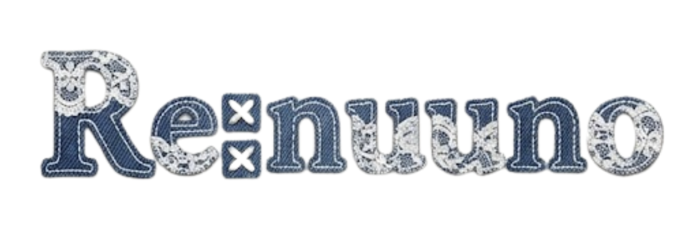

メンバー
古木千里、粟野友結、笠原七海、井上わかば
テーマ
＜自分の衣類を自分の中で循環させる＞
自分の衣服を自分でリメイク！！
家にある着なくなった服を手縫いだけでリメイク

活動
課題：リサイクルへのハードルが高い
→まずは「小さい行動」から始められる仕組みを作る
ターゲット：sheinやGRLで安い服を大量購入する10-20代女性
→安く手軽に買えるが、質が良くないことが多いためすぐ着なくなってしまう
取り組み：自分たちでリメイクしている様子をtiktokやinstagramで発信
→真似したくなるような簡単で可愛いリメイク
目指すところ：リメイクを当たり前にして、素材を無駄にせず有効活用
安い服を大量に買うのではなく、環境にやさしく、長く使えるものを買うように意識が変わる
最終発表プレゼンテーションdoyozemi